Un cuadro de cada dos y cambios de accion; hasta cinco segundos reales posteriores, limitados por nueva recuperacion o pausa. Tiempos de imagen: AVI a20FPS.
Video completo · InformeDerecha -58,4; cooldown recto breve y centroide. Oscila al acomodarse, sigue hacia rampa.
| start | end | gs | quien | angle_first | angle_last | duration |
|---|---|---|---|---|---|---|
| 462 | 469 | 0 | centroide | -43.1 | 82.0 | 0.252 |
| 470 | 471 | 0 | recup-confirma | 82.0 | 82.0 | 0.033 |
| 472 | 472 | 4 | recup-disparo-sin-decision | 0.0 | 0.0 | 0.000 |
| 473 | 487 | 4 | recup-espera-retro-ack | 0.0 | 0.0 | 0.504 |
| 488 | 488 | 4 | recup-AMBIGUA | 0.0 | 0.0 | 0.000 |
| 489 | 508 | 4 | recup-CURVA | -58.4 | -58.4 | 0.688 |
| 509 | 509 | 0 | recup-CURVA | 0.0 | 0.0 | 0.000 |
| 510 | 516 | 0 | recup-cooldown-recto | 0.0 | 0.0 | 0.206 |
| 517 | 586 | 0 | centroide | 15.6 | -15.2 | 2.711 |
| 587 | 588 | 0 | rampa-linea | -21.0 | -15.8 | 0.043 |
| 589 | 589 | 0 | rampa-recta | 0.1 | 0.1 | 0.000 |
| 590 | 598 | 0 | rampa-linea | -8.7 | -17.4 | 0.359 |
| 599 | 603 | 0 | rampa-corta-recto | 0.0 | 0.0 | 0.151 |
| 604 | 629 | 0 | rampa-cresta-recto | 0.0 | 0.0 | 0.835 |
| 630 | 634 | 0 | rampa-linea | 56.8 | 33.6 | 0.172 |
| 635 | 636 | 0 | rampa-recta | -1.8 | -4.6 | 0.043 |
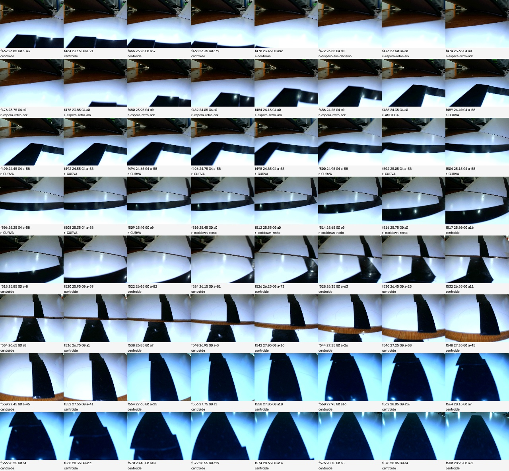
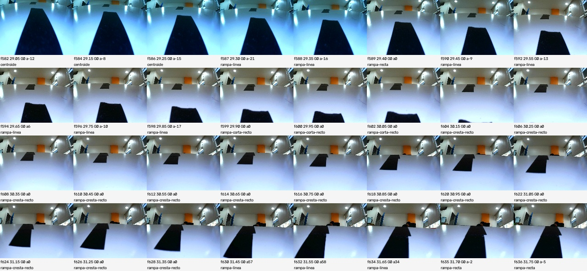
Termina la ventana en f987, aun AMBIGUA/GS4. Hay pausa de captura y reinicio de estado: no clasificar como GAP exitoso.
| start | end | gs | quien | angle_first | angle_last | duration |
|---|---|---|---|---|---|---|
| 960 | 967 | 0 | rampa-cresta-recto | 0.0 | 0.0 | 0.202 |
| 968 | 969 | 0 | recup-confirma | 0.0 | 0.0 | 0.028 |
| 970 | 970 | 4 | recup-disparo-sin-decision | 0.0 | 0.0 | 0.000 |
| 971 | 986 | 4 | recup-espera-retro-ack | 0.0 | 0.0 | 0.522 |
| 987 | 987 | 4 | recup-AMBIGUA | 0.0 | 0.0 | 0.000 |
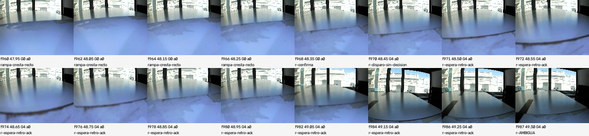
GS18 cruza interrupcion recta de rampa y recupera f2070; sigue hacia bajada.
| start | end | gs | quien | angle_first | angle_last | duration |
|---|---|---|---|---|---|---|
| 1996 | 2003 | 0 | centroide | 1.6 | -32.8 | 0.260 |
| 2004 | 2005 | 0 | recup-confirma | -32.8 | -32.8 | 0.035 |
| 2006 | 2006 | 4 | recup-disparo-sin-decision | 0.0 | 0.0 | 0.000 |
| 2007 | 2022 | 4 | recup-espera-retro-ack | 0.0 | 0.0 | 0.513 |
| 2023 | 2024 | 4 | recup-AMBIGUA | 0.0 | 0.0 | 0.040 |
| 2025 | 2025 | 18 | gap-inicio | 0.0 | 0.0 | 0.000 |
| 2026 | 2069 | 18 | gap-busca-negro | 0.0 | 0.0 | 1.467 |
| 2070 | 2070 | 0 | gap-recuperado | 0.0 | 0.0 | 0.000 |
| 2071 | 2134 | 0 | centroide | 60.2 | 1.1 | 2.676 |
| 2135 | 2150 | 0 | bajada-linea | 20.8 | 9.7 | 0.621 |
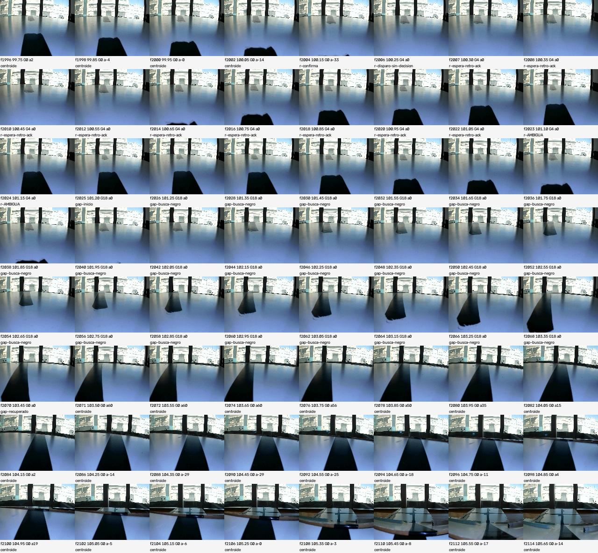
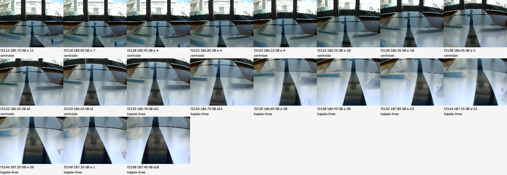
Tras proteccion de bajada, la linea queda desplazada/no conectada. Espera AMBIGUA, usa GS18 y vuelve a linea f2872; continua hasta verde.
| start | end | gs | quien | angle_first | angle_last | duration |
|---|---|---|---|---|---|---|
| 2794 | 2801 | 0 | bajada-sin-recup | 0.0 | 0.0 | 0.234 |
| 2802 | 2803 | 0 | recup-confirma | 0.0 | 0.0 | 0.032 |
| 2804 | 2804 | 4 | recup-disparo-sin-decision | 0.0 | 0.0 | 0.000 |
| 2805 | 2820 | 4 | recup-espera-retro-ack | 0.0 | 0.0 | 0.516 |
| 2821 | 2849 | 4 | recup-AMBIGUA | 0.0 | 0.0 | 0.944 |
| 2850 | 2850 | 18 | gap-inicio | 0.0 | 0.0 | 0.000 |
| 2851 | 2871 | 18 | gap-busca-negro | 0.0 | 0.0 | 0.767 |
| 2872 | 2872 | 0 | gap-recuperado | 0.0 | 0.0 | 0.000 |
| 2873 | 2970 | 0 | centroide | 35.5 | 27.3 | 4.069 |
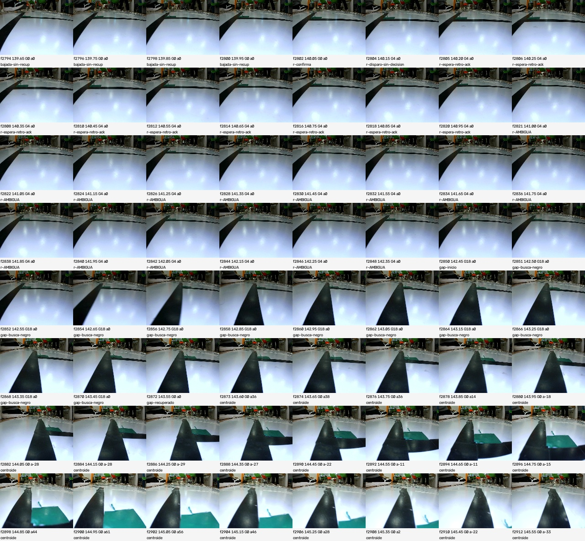
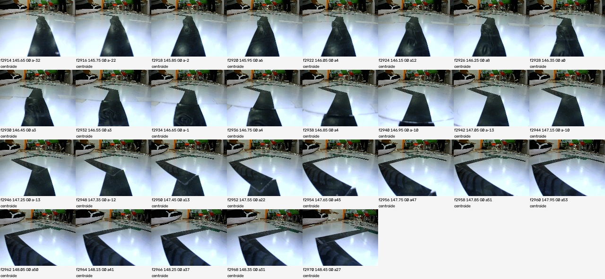
Izquierda +63,3; vuelve a cinta y llega a verde derecho. La mascara vacia despues del verde es otra fase.
| start | end | gs | quien | angle_first | angle_last | duration |
|---|---|---|---|---|---|---|
| 3643 | 3650 | 0 | centroide | 34.2 | -86.1 | 0.280 |
| 3651 | 3652 | 0 | recup-confirma | -86.1 | -86.1 | 0.032 |
| 3653 | 3653 | 4 | recup-disparo-sin-decision | 0.0 | 0.0 | 0.000 |
| 3654 | 3669 | 4 | recup-espera-retro-ack | 0.0 | 0.0 | 0.536 |
| 3670 | 3670 | 4 | recup-AMBIGUA | 0.0 | 0.0 | 0.000 |
| 3671 | 3689 | 4 | recup-CURVA | 63.3 | 63.3 | 0.679 |
| 3690 | 3690 | 0 | recup-CURVA | 0.0 | 0.0 | 0.000 |
| 3691 | 3697 | 0 | recup-cooldown-recto | 0.0 | 0.0 | 0.208 |
| 3698 | 3743 | 0 | centroide | -20.7 | -5.8 | 1.817 |
| 3744 | 3753 | 2 | centroide | 4.2 | 17.7 | 0.360 |
| 3754 | 3763 | 0 | centroide | 15.4 | 90.0 | 0.351 |
| 3764 | 3769 | 0 | v66-bloqueo-mascara-vacia-recto | 0.0 | 0.0 | 0.164 |
| 3770 | 3819 | 0 | centroide | -46.0 | 16.3 | 1.837 |
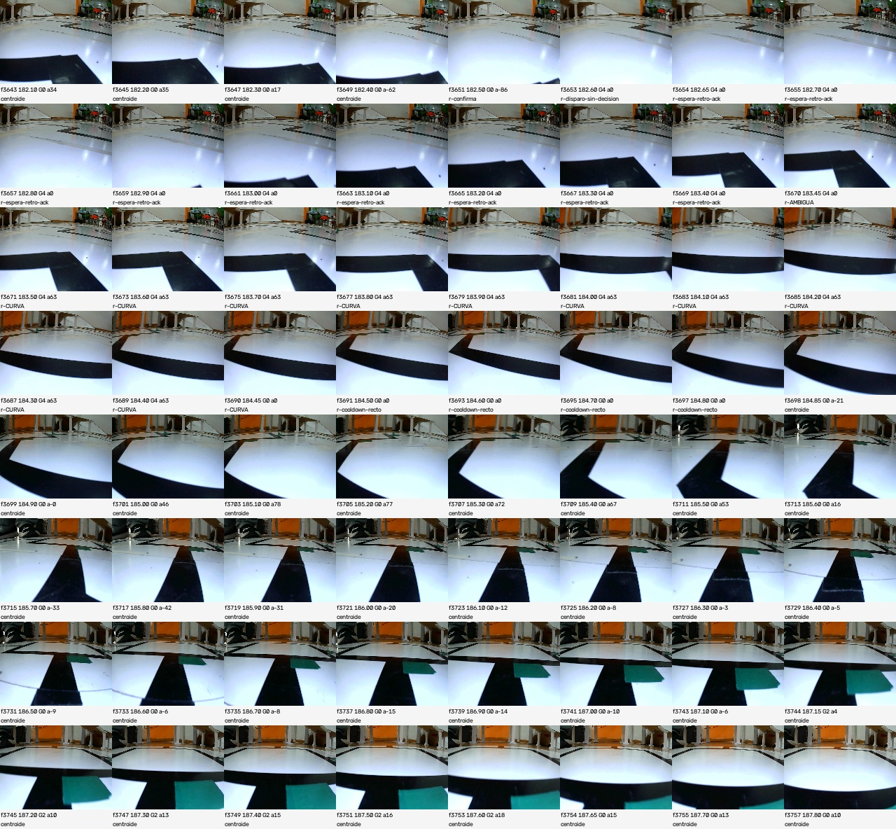
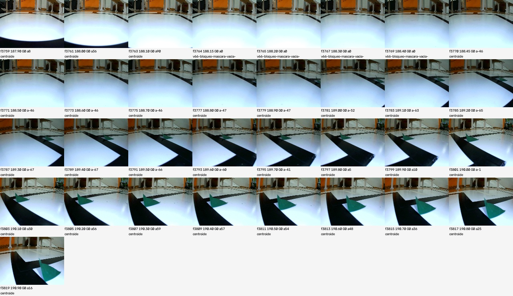
Codo derecho -67,4; complemento -85 y busqueda -85. La memoria cambia de cinta izquierda a trazo de piso derecho. Conecta f4125; en f4126 vence el segundo y manda STOP.
| start | end | gs | quien | angle_first | angle_last | duration |
|---|---|---|---|---|---|---|
| 4025 | 4032 | 0 | centroide | -54.4 | -73.9 | 0.261 |
| 4033 | 4034 | 0 | recup-confirma | -73.9 | -73.9 | 0.032 |
| 4035 | 4035 | 4 | recup-disparo-sin-decision | 0.0 | 0.0 | 0.000 |
| 4036 | 4050 | 4 | recup-espera-retro-ack | 0.0 | 0.0 | 0.516 |
| 4051 | 4052 | 4 | recup-AMBIGUA | 0.0 | 0.0 | 0.045 |
| 4053 | 4070 | 4 | recup-CURVA | -67.4 | -67.4 | 0.664 |
| 4071 | 4071 | 0 | recup-CURVA | 0.0 | 0.0 | 0.000 |
| 4072 | 4081 | 0 | recup-cooldown-recto | 0.0 | 0.0 | 0.313 |
| 4082 | 4095 | 0 | recup-guard-completa | -85.0 | -85.0 | 0.437 |
| 4096 | 4124 | 0 | recup-guard-reenganche | -85.0 | -85.0 | 0.933 |
| 4125 | 4125 | 0 | centroide | -47.4 | -47.4 | 0.000 |
| 4126 | 4126 | 19 | recup-guard-stop | 0.0 | 0.0 | 0.000 |
| 4127 | 4202 | 19 | perdida-failsafe-persistente | 0.0 | 0.0 | 3.053 |
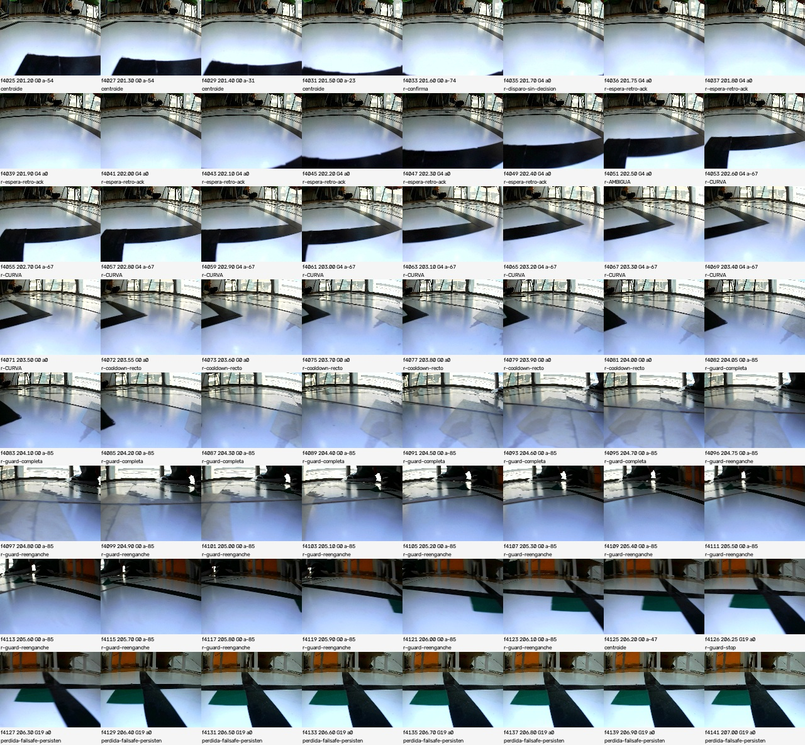
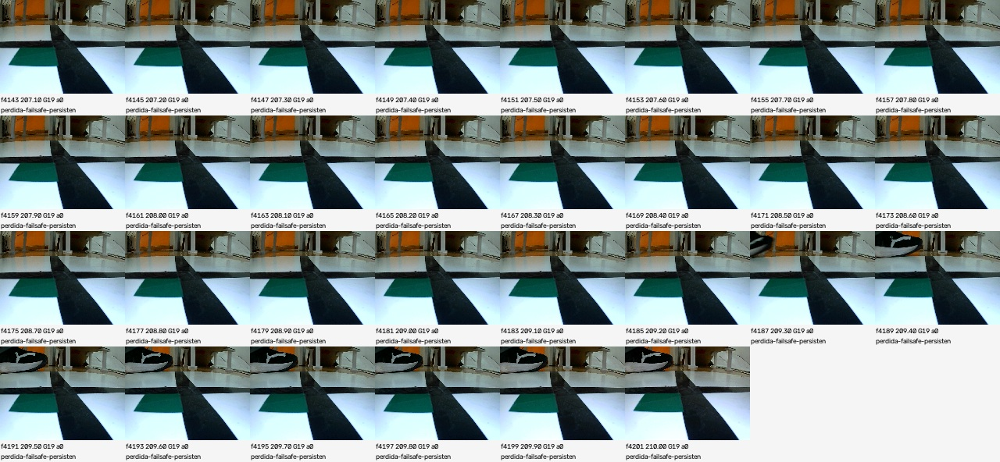
Rama previa corrige a derecha -12; vuelve a cinta. Despues requiere izquierda en episodio8.
| start | end | gs | quien | angle_first | angle_last | duration |
|---|---|---|---|---|---|---|
| 4570 | 4577 | 0 | centroide | -43.9 | 10.6 | 0.281 |
| 4578 | 4579 | 0 | recup-confirma | 10.6 | 10.6 | 0.036 |
| 4580 | 4580 | 4 | recup-disparo-sin-decision | 0.0 | 0.0 | 0.000 |
| 4581 | 4595 | 4 | recup-espera-retro-ack | 0.0 | 0.0 | 0.517 |
| 4596 | 4596 | 4 | recup-AMBIGUA | 0.0 | 0.0 | 0.000 |
| 4597 | 4616 | 4 | recup-CURVA | -12.0 | -12.0 | 0.706 |
| 4617 | 4617 | 0 | recup-CURVA | 0.0 | 0.0 | 0.000 |
| 4618 | 4625 | 0 | recup-cooldown-recto | 0.0 | 0.0 | 0.242 |
| 4626 | 4737 | 0 | centroide | 55.5 | -87.5 | 4.328 |
| 4738 | 4739 | 0 | recup-confirma | -87.5 | -87.5 | 0.032 |
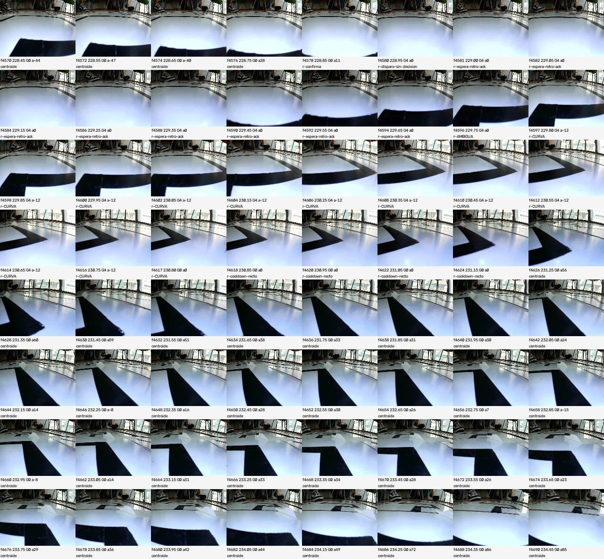
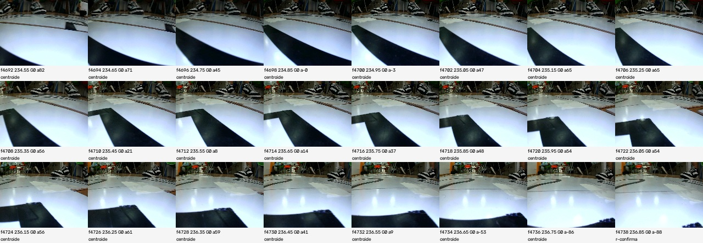
Izquierda +62,5; sigue la curva con oscilacion visible y conserva linea en la ventana.
| start | end | gs | quien | angle_first | angle_last | duration |
|---|---|---|---|---|---|---|
| 4730 | 4737 | 0 | centroide | 41.1 | -87.5 | 0.260 |
| 4738 | 4739 | 0 | recup-confirma | -87.5 | -87.5 | 0.032 |
| 4740 | 4740 | 4 | recup-disparo-sin-decision | 0.0 | 0.0 | 0.000 |
| 4741 | 4756 | 4 | recup-espera-retro-ack | 0.0 | 0.0 | 0.527 |
| 4757 | 4757 | 4 | recup-AMBIGUA | 0.0 | 0.0 | 0.000 |
| 4758 | 4775 | 4 | recup-CURVA | 62.5 | 62.5 | 0.670 |
| 4776 | 4776 | 0 | recup-CURVA | 0.0 | 0.0 | 0.000 |
| 4777 | 4782 | 0 | recup-cooldown-recto | 0.0 | 0.0 | 0.178 |
| 4783 | 4902 | 0 | centroide | -51.3 | 37.7 | 4.673 |
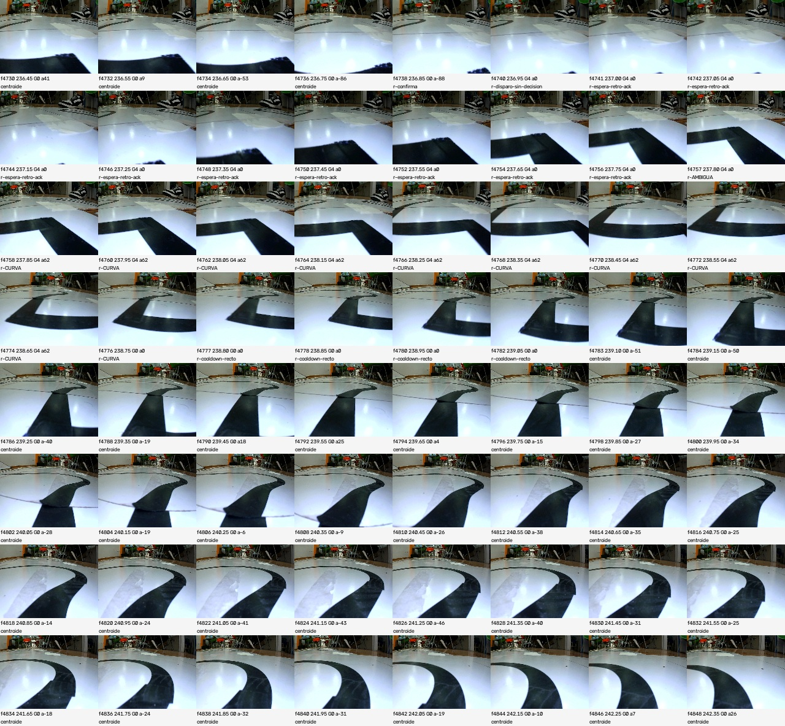
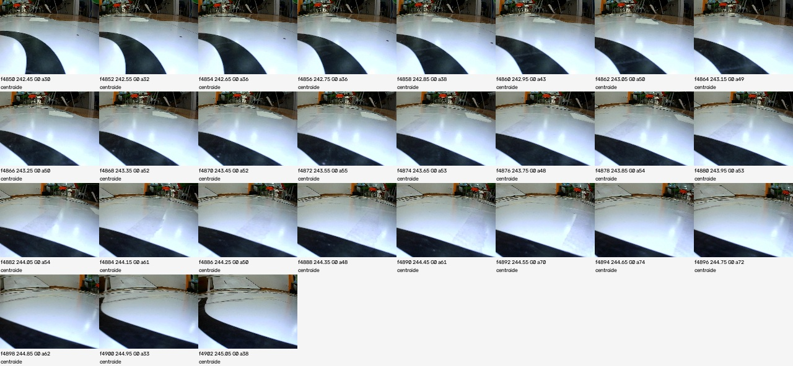
Derecha -60,4; COMPLETAR_GIRO -85 seis cuadros; vuelve a cinta y pasa al GAP10.
| start | end | gs | quien | angle_first | angle_last | duration |
|---|---|---|---|---|---|---|
| 5027 | 5034 | 0 | centroide | 70.5 | -86.2 | 0.250 |
| 5035 | 5036 | 0 | recup-confirma | -86.2 | -86.2 | 0.035 |
| 5037 | 5037 | 4 | recup-disparo-sin-decision | 0.0 | 0.0 | 0.000 |
| 5038 | 5052 | 4 | recup-espera-retro-ack | 0.0 | 0.0 | 0.533 |
| 5053 | 5053 | 4 | recup-AMBIGUA | 0.0 | 0.0 | 0.000 |
| 5054 | 5071 | 4 | recup-CURVA | -60.4 | -60.4 | 0.674 |
| 5072 | 5072 | 0 | recup-CURVA | 0.0 | 0.0 | 0.000 |
| 5073 | 5075 | 0 | recup-cooldown-recto | 0.0 | 0.0 | 0.076 |
| 5076 | 5081 | 0 | recup-completa-giro | -85.0 | -85.0 | 0.204 |
| 5082 | 5124 | 0 | centroide | -58.3 | -32.3 | 1.629 |
| 5125 | 5126 | 0 | recup-confirma | -32.3 | -32.3 | 0.035 |
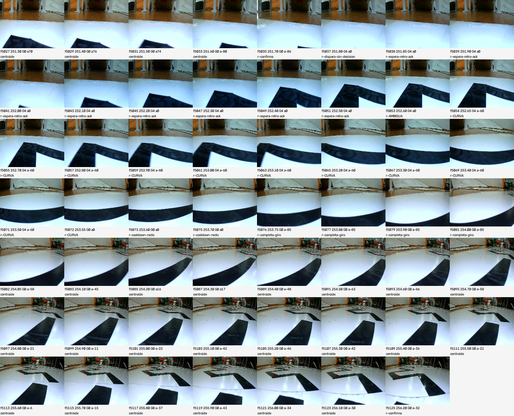
GS18 recto vuelve a linea f5166; la curva siguiente se pierde 1,157 s reales despues y dispara11.
| start | end | gs | quien | angle_first | angle_last | duration |
|---|---|---|---|---|---|---|
| 5117 | 5124 | 0 | centroide | -36.7 | -32.3 | 0.249 |
| 5125 | 5126 | 0 | recup-confirma | -32.3 | -32.3 | 0.035 |
| 5127 | 5127 | 4 | recup-disparo-sin-decision | 0.0 | 0.0 | 0.000 |
| 5128 | 5143 | 4 | recup-espera-retro-ack | 0.0 | 0.0 | 0.531 |
| 5144 | 5144 | 4 | recup-AMBIGUA | 0.0 | 0.0 | 0.000 |
| 5145 | 5145 | 18 | gap-inicio | 0.0 | 0.0 | 0.000 |
| 5146 | 5165 | 18 | gap-busca-negro | 0.0 | 0.0 | 0.687 |
| 5166 | 5166 | 0 | gap-recuperado | 0.0 | 0.0 | 0.000 |
| 5167 | 5193 | 0 | centroide | -36.0 | -83.0 | 1.020 |
| 5194 | 5195 | 0 | recup-confirma | -83.0 | -83.0 | 0.031 |
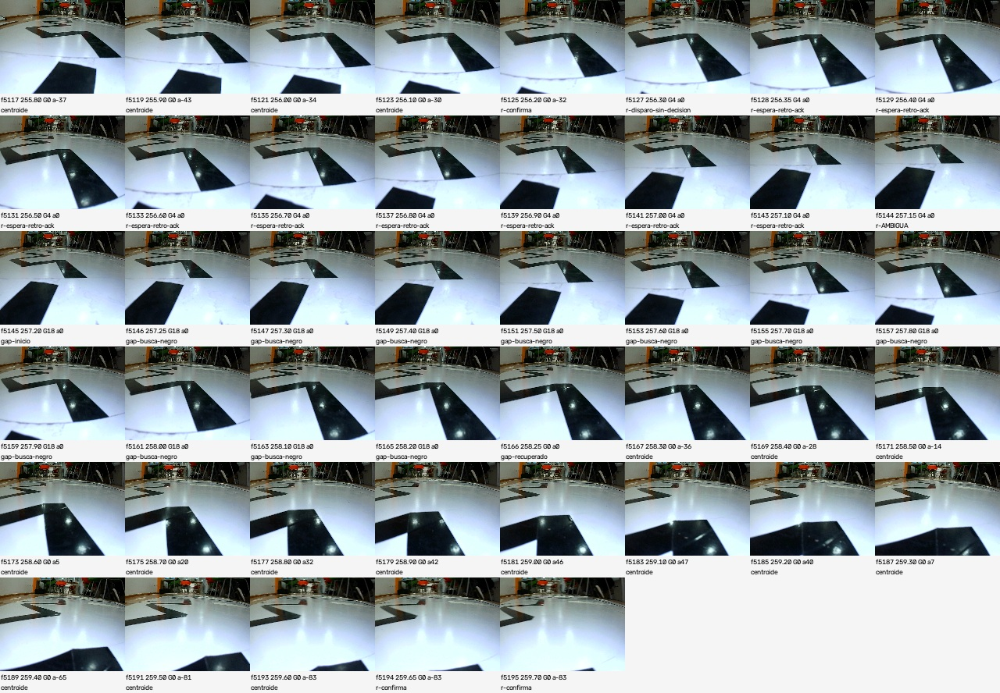
Izquierda +60,8; vuelve al centroide y sigue hasta el codo derecho12.
| start | end | gs | quien | angle_first | angle_last | duration |
|---|---|---|---|---|---|---|
| 5186 | 5193 | 0 | centroide | 34.9 | -83.0 | 0.261 |
| 5194 | 5195 | 0 | recup-confirma | -83.0 | -83.0 | 0.031 |
| 5196 | 5196 | 4 | recup-disparo-sin-decision | 0.0 | 0.0 | 0.000 |
| 5197 | 5212 | 4 | recup-espera-retro-ack | 0.0 | 0.0 | 0.531 |
| 5213 | 5213 | 4 | recup-AMBIGUA | 0.0 | 0.0 | 0.000 |
| 5214 | 5231 | 4 | recup-CURVA | 60.8 | 60.8 | 0.684 |
| 5232 | 5232 | 0 | recup-CURVA | 60.8 | 60.8 | 0.000 |
| 5233 | 5320 | 0 | centroide | -55.3 | 87.8 | 3.475 |
| 5321 | 5322 | 0 | recup-confirma | 87.8 | 87.8 | 0.033 |
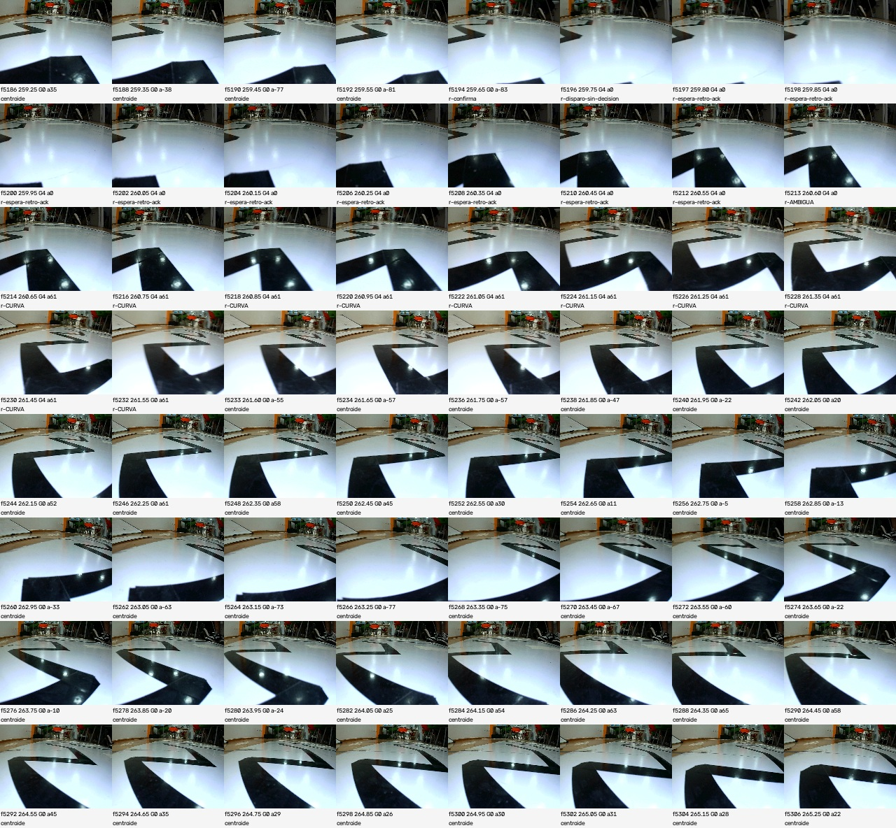
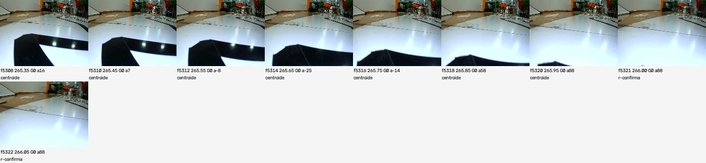
AMBIGUA cercana a un segundo post-retroceso; rama previa confirma derecha -35. Cooldown recto con transversal, luego centroide y sigue zigzag.
| start | end | gs | quien | angle_first | angle_last | duration |
|---|---|---|---|---|---|---|
| 5313 | 5320 | 0 | centroide | -20.1 | 87.8 | 0.287 |
| 5321 | 5322 | 0 | recup-confirma | 87.8 | 87.8 | 0.033 |
| 5323 | 5323 | 4 | recup-disparo-sin-decision | 0.0 | 0.0 | 0.000 |
| 5324 | 5338 | 4 | recup-espera-retro-ack | 0.0 | 0.0 | 0.503 |
| 5339 | 5363 | 4 | recup-AMBIGUA | 0.0 | 0.0 | 0.964 |
| 5364 | 5364 | 4 | recup-CURVA | -35.0 | -35.0 | 0.000 |
| 5365 | 5365 | 0 | recup-CURVA | -35.0 | -35.0 | 0.000 |
| 5366 | 5377 | 0 | centroide | -36.4 | -2.8 | 0.439 |
| 5378 | 5387 | 0 | recup-cooldown-recto | 0.0 | 0.0 | 0.324 |
| 5388 | 5493 | 0 | centroide | 14.3 | -48.2 | 4.081 |
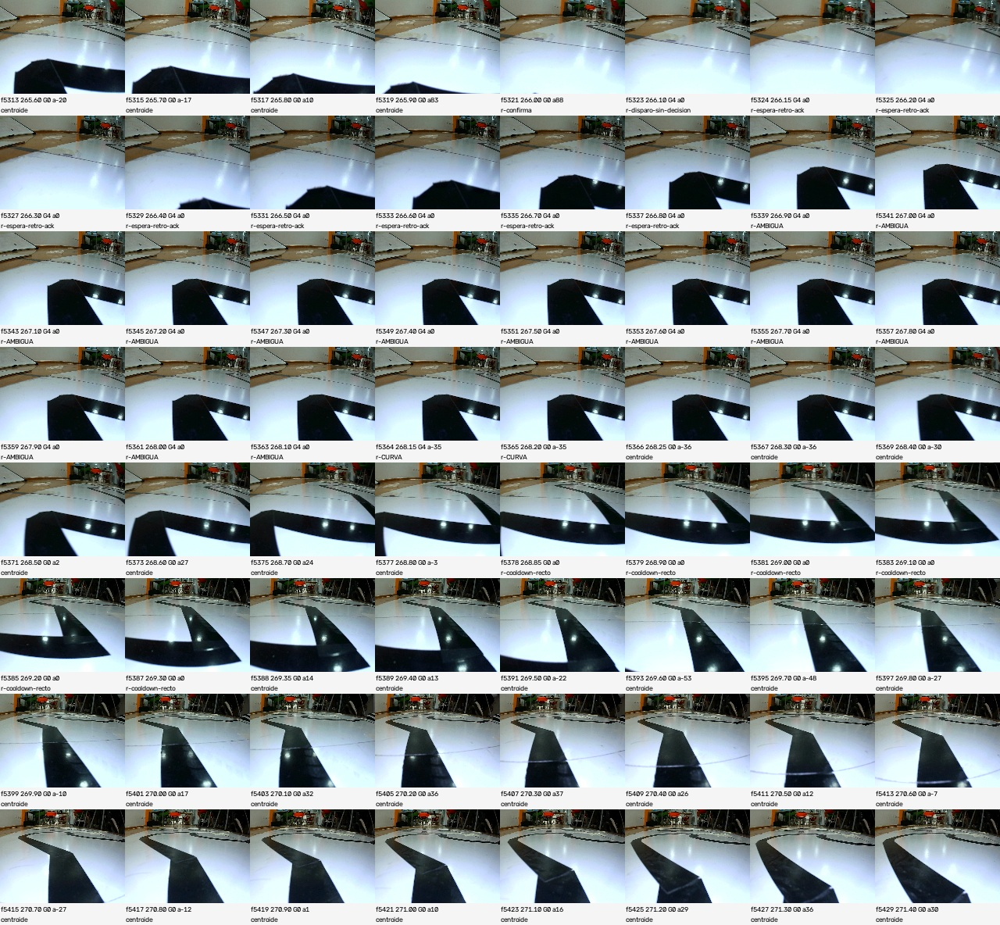
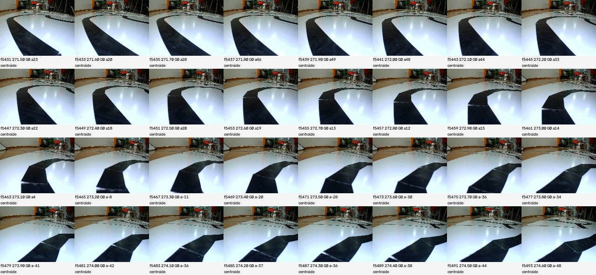
Derecha -70; vuelve al centroide y sigue el zigzag hasta derecha14.
| start | end | gs | quien | angle_first | angle_last | duration |
|---|---|---|---|---|---|---|
| 5529 | 5536 | 0 | centroide | -63.2 | 85.1 | 0.256 |
| 5537 | 5538 | 0 | recup-confirma | 85.1 | 85.1 | 0.035 |
| 5539 | 5539 | 4 | recup-disparo-sin-decision | 0.0 | 0.0 | 0.000 |
| 5540 | 5554 | 4 | recup-espera-retro-ack | 0.0 | 0.0 | 0.516 |
| 5555 | 5555 | 4 | recup-AMBIGUA | 0.0 | 0.0 | 0.000 |
| 5556 | 5575 | 4 | recup-CURVA | -70.0 | -70.0 | 0.707 |
| 5576 | 5576 | 0 | recup-CURVA | -70.0 | -70.0 | 0.000 |
| 5577 | 5679 | 0 | centroide | 1.1 | 82.7 | 4.047 |
| 5680 | 5680 | 0 | recup-confirma | 82.7 | 82.7 | 0.000 |
| 5681 | 5681 | 0 | centroide | 75.7 | 75.7 | 0.000 |
| 5682 | 5683 | 0 | recup-confirma | 75.7 | 75.7 | 0.033 |
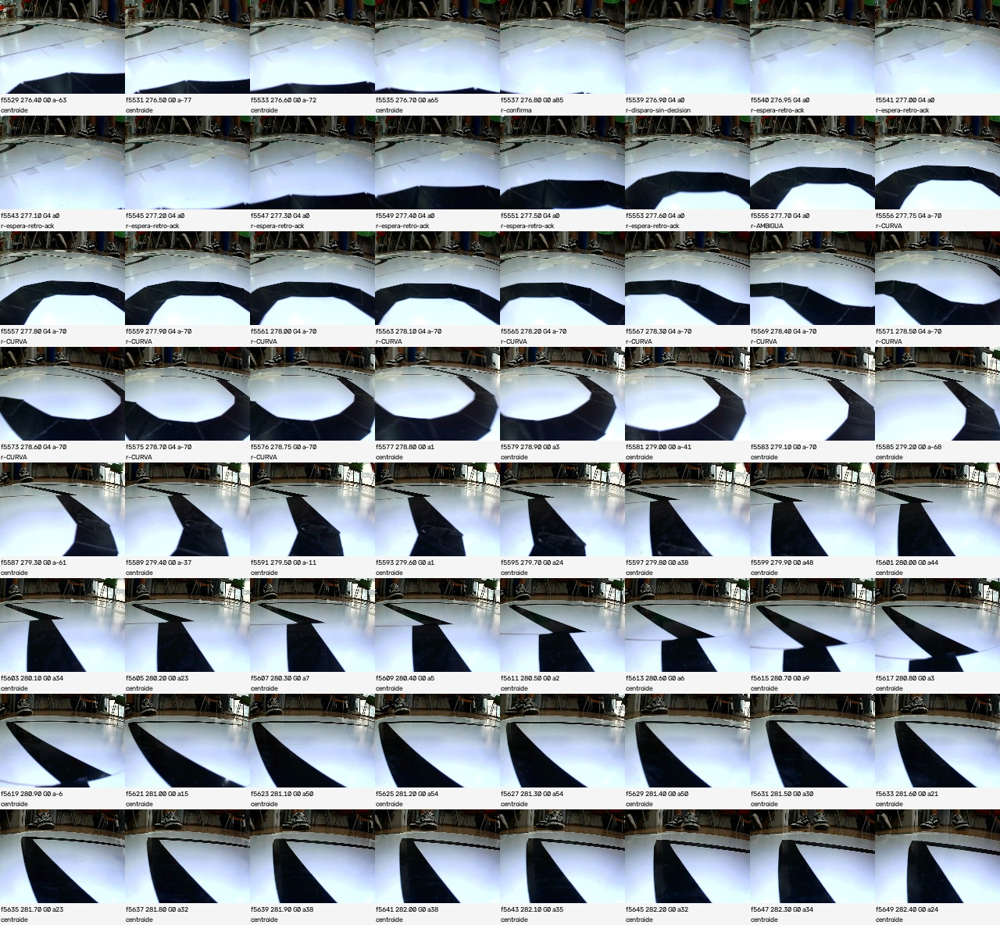
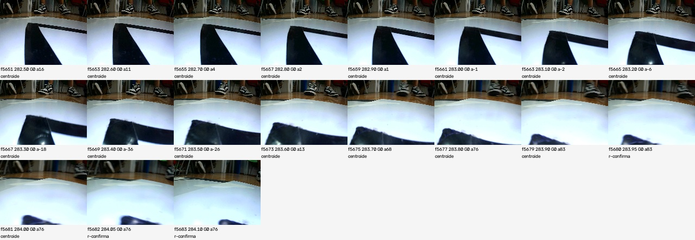
Rama previa derecha -12,3; COMPLETAR_GIRO -85 diez cuadros; vuelve a linea con oscilacion y llega a otra zona.
| start | end | gs | quien | angle_first | angle_last | duration |
|---|---|---|---|---|---|---|
| 5674 | 5679 | 0 | centroide | 47.8 | 82.7 | 0.177 |
| 5680 | 5680 | 0 | recup-confirma | 82.7 | 82.7 | 0.000 |
| 5681 | 5681 | 0 | centroide | 75.7 | 75.7 | 0.000 |
| 5682 | 5683 | 0 | recup-confirma | 75.7 | 75.7 | 0.033 |
| 5684 | 5684 | 4 | recup-disparo-sin-decision | 0.0 | 0.0 | 0.000 |
| 5685 | 5700 | 4 | recup-espera-retro-ack | 0.0 | 0.0 | 0.528 |
| 5701 | 5701 | 4 | recup-AMBIGUA | 0.0 | 0.0 | 0.000 |
| 5702 | 5718 | 4 | recup-CURVA | -12.3 | -12.3 | 0.677 |
| 5719 | 5719 | 0 | recup-CURVA | 0.0 | 0.0 | 0.000 |
| 5720 | 5729 | 0 | recup-completa-giro | -85.0 | -85.0 | 0.376 |
| 5730 | 5732 | 0 | centroide | 13.4 | 38.6 | 0.080 |
| 5733 | 5733 | 0 | recup-cooldown-recto | 0.0 | 0.0 | 0.000 |
| 5734 | 5840 | 0 | centroide | 38.4 | 50.0 | 4.240 |
| 5841 | 5842 | 0 | recup-confirma | 50.0 | 50.0 | 0.041 |
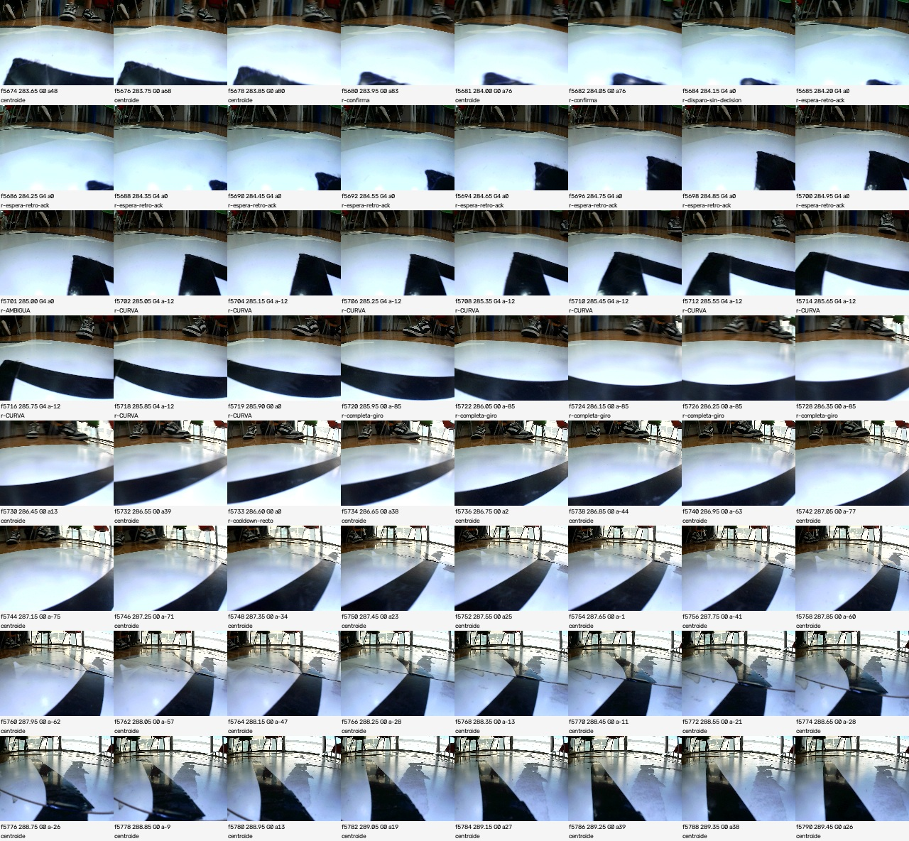
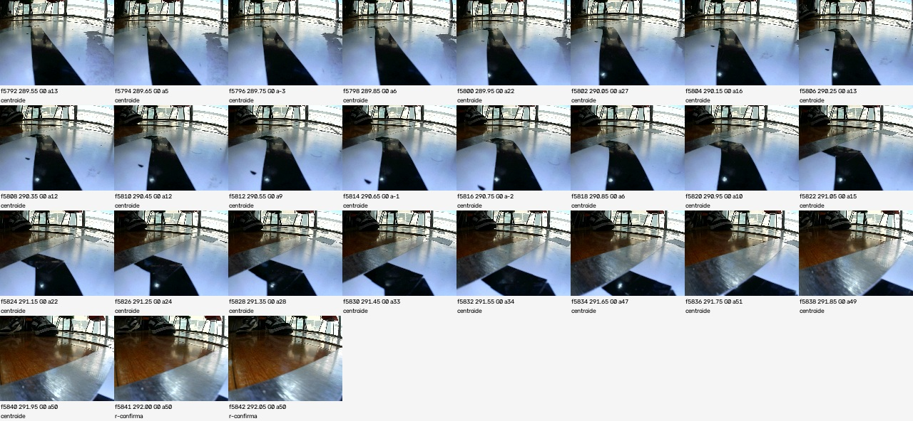
Empieza ya sobre madera/franja brillante, gira izquierda +53,2 y sigue mostrando madera. Busca derecha -85, pero termina la sesion sin ver recaptura ni STOP. No usar como codo normal de pista blanca.
| start | end | gs | quien | angle_first | angle_last | duration |
|---|---|---|---|---|---|---|
| 5833 | 5840 | 0 | centroide | 40.6 | 50.0 | 0.324 |
| 5841 | 5842 | 0 | recup-confirma | 50.0 | 50.0 | 0.041 |
| 5843 | 5843 | 4 | recup-disparo-sin-decision | 0.0 | 0.0 | 0.000 |
| 5844 | 5859 | 4 | recup-espera-retro-ack | 0.0 | 0.0 | 0.509 |
| 5860 | 5861 | 4 | recup-AMBIGUA | 0.0 | 0.0 | 0.035 |
| 5862 | 5882 | 4 | recup-CURVA | 53.2 | 53.2 | 0.659 |
| 5883 | 5883 | 0 | recup-CURVA | 0.0 | 0.0 | 0.000 |
| 5884 | 5893 | 0 | recup-cooldown-recto | 0.0 | 0.0 | 0.303 |
| 5894 | 5911 | 0 | recup-guard-reenganche | -85.0 | -85.0 | 0.572 |
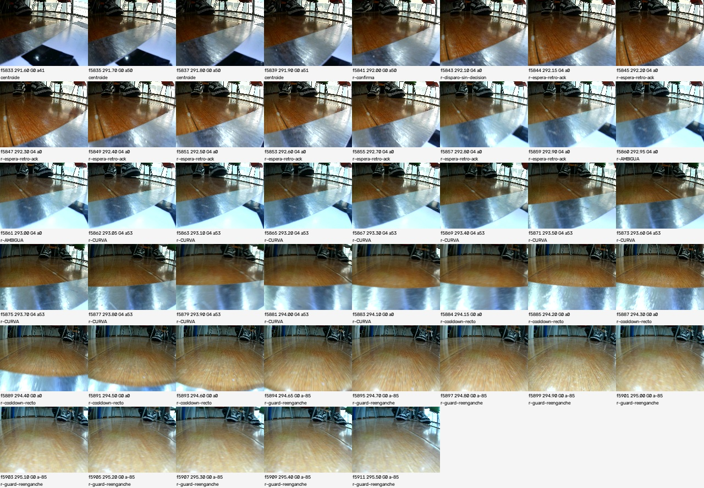
Repite entrada derecha hacia rampa -58,2; vuelve a linea y continua subida.
| start | end | gs | quien | angle_first | angle_last | duration |
|---|---|---|---|---|---|---|
| 6751 | 6758 | 0 | centroide | -53.2 | 83.0 | 0.265 |
| 6759 | 6760 | 0 | recup-confirma | 83.0 | 83.0 | 0.037 |
| 6761 | 6761 | 4 | recup-disparo-sin-decision | 0.0 | 0.0 | 0.000 |
| 6762 | 6776 | 4 | recup-espera-retro-ack | 0.0 | 0.0 | 0.500 |
| 6777 | 6777 | 4 | recup-AMBIGUA | 0.0 | 0.0 | 0.000 |
| 6778 | 6797 | 4 | recup-CURVA | -58.2 | -58.2 | 0.703 |
| 6798 | 6798 | 0 | recup-CURVA | 0.0 | 0.0 | 0.000 |
| 6799 | 6805 | 0 | recup-cooldown-recto | 0.0 | 0.0 | 0.205 |
| 6806 | 6871 | 0 | centroide | 19.2 | -4.0 | 2.632 |
| 6872 | 6873 | 0 | rampa-linea | -4.2 | -6.5 | 0.048 |
| 6874 | 6874 | 0 | rampa-recta | 1.5 | 1.5 | 0.000 |
| 6875 | 6881 | 0 | rampa-linea | 5.0 | -9.6 | 0.264 |
| 6882 | 6887 | 0 | rampa-corta-recto | 0.0 | 0.0 | 0.188 |
| 6888 | 6913 | 0 | rampa-cresta-recto | 0.0 | 0.0 | 0.879 |
| 6914 | 6919 | 0 | rampa-linea | 46.8 | 8.5 | 0.236 |
| 6920 | 6923 | 0 | rampa-recta | -7.1 | -19.9 | 0.132 |
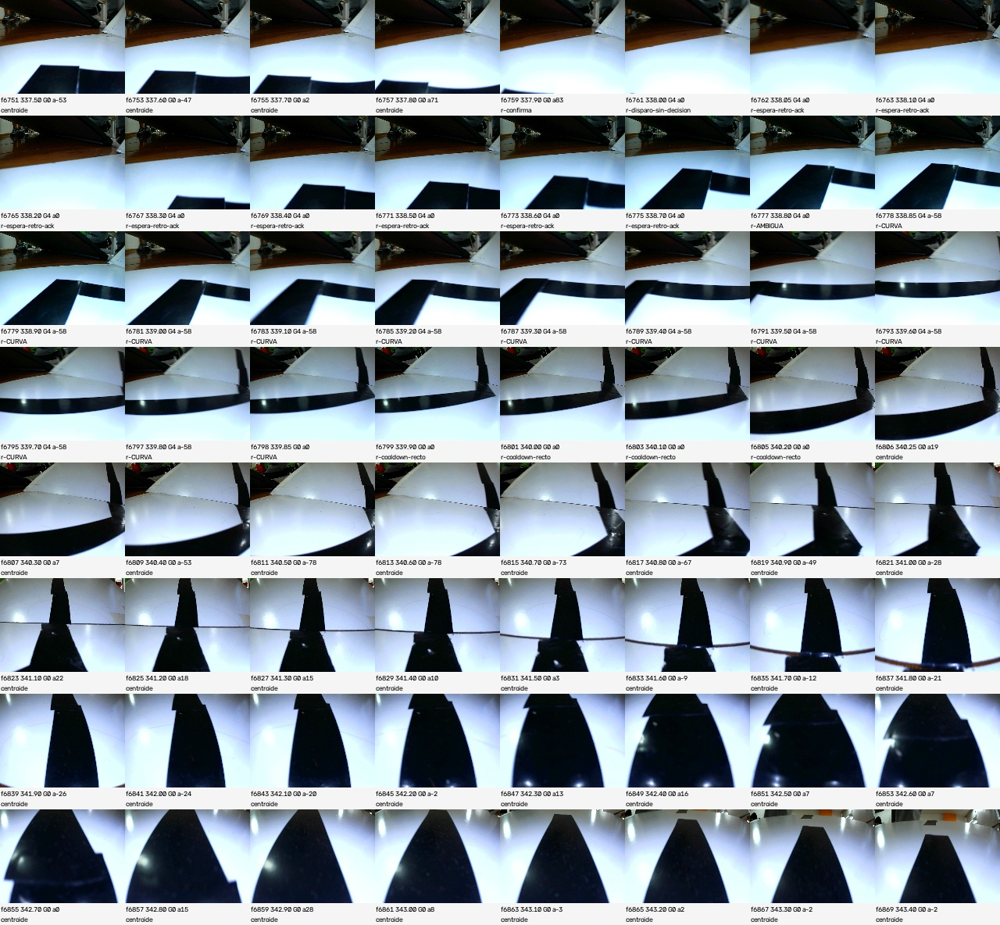
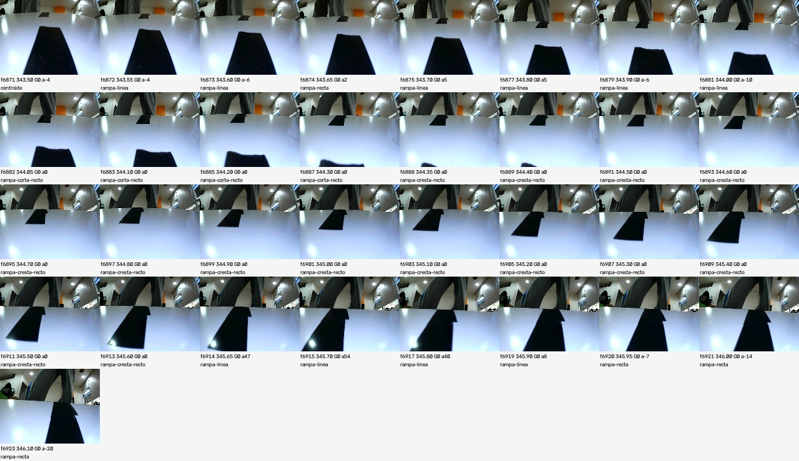
GS18 cruza GAP recto de rampa, recupera f7772 y sigue hacia bajada.
| start | end | gs | quien | angle_first | angle_last | duration |
|---|---|---|---|---|---|---|
| 7697 | 7704 | 0 | centroide | 10.2 | -20.5 | 0.279 |
| 7705 | 7706 | 0 | recup-confirma | -20.5 | -20.5 | 0.032 |
| 7707 | 7707 | 4 | recup-disparo-sin-decision | 0.0 | 0.0 | 0.000 |
| 7708 | 7723 | 4 | recup-espera-retro-ack | 0.0 | 0.0 | 0.533 |
| 7724 | 7725 | 4 | recup-AMBIGUA | 0.0 | 0.0 | 0.044 |
| 7726 | 7726 | 18 | gap-inicio | 0.0 | 0.0 | 0.000 |
| 7727 | 7771 | 18 | gap-busca-negro | 0.0 | 0.0 | 1.544 |
| 7772 | 7772 | 0 | gap-recuperado | 0.0 | 0.0 | 0.000 |
| 7773 | 7833 | 0 | centroide | 62.1 | -30.5 | 2.535 |
| 7834 | 7850 | 0 | bajada-linea | -46.1 | 53.7 | 0.688 |
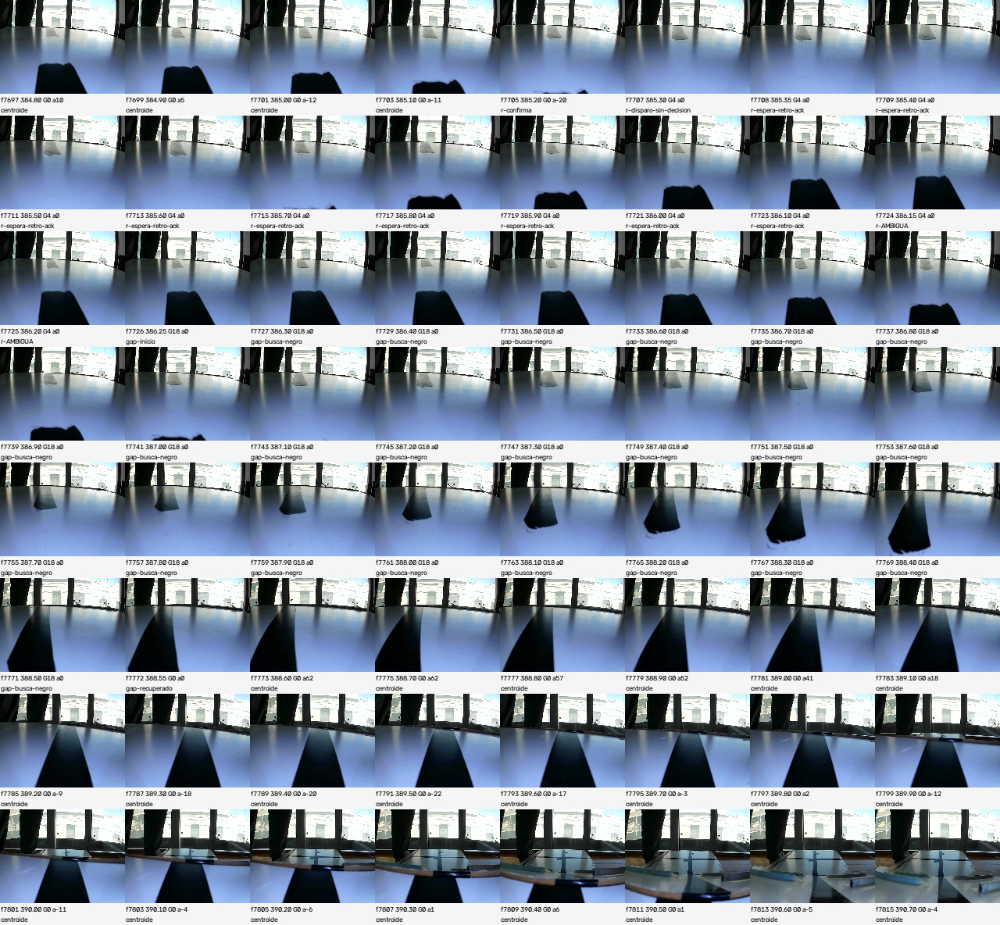
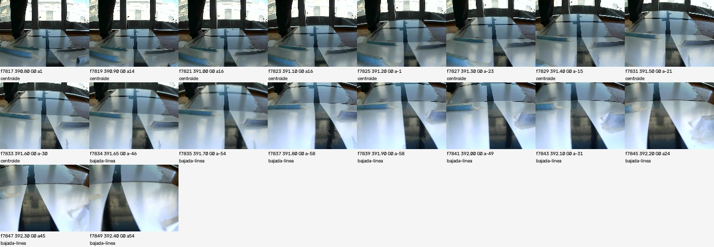
Derecha -73,1 tras marca verde; al soltar se pierde cinta. El archivo termina f8354 en mascara vacia. No hay desenlace grabado.
| start | end | gs | quien | angle_first | angle_last | duration |
|---|---|---|---|---|---|---|
| 8302 | 8309 | 0 | centroide | 21.5 | -56.8 | 0.913 |
| 8310 | 8311 | 0 | recup-confirma | -56.8 | -56.8 | 0.032 |
| 8312 | 8312 | 4 | recup-disparo-sin-decision | 0.0 | 0.0 | 0.000 |
| 8313 | 8326 | 4 | recup-espera-retro-ack | 0.0 | 0.0 | 0.500 |
| 8327 | 8329 | 4 | recup-AMBIGUA | 0.0 | 0.0 | 0.106 |
| 8330 | 8345 | 4 | recup-CURVA | -73.1 | -73.1 | 0.598 |
| 8346 | 8346 | 0 | recup-CURVA | -73.1 | -73.1 | 0.000 |
| 8347 | 8350 | 0 | recup-cooldown-recto | 0.0 | 0.0 | 0.100 |
| 8351 | 8354 | 0 | v66-bloqueo-mascara-vacia-recto | 0.0 | 0.0 | 0.105 |
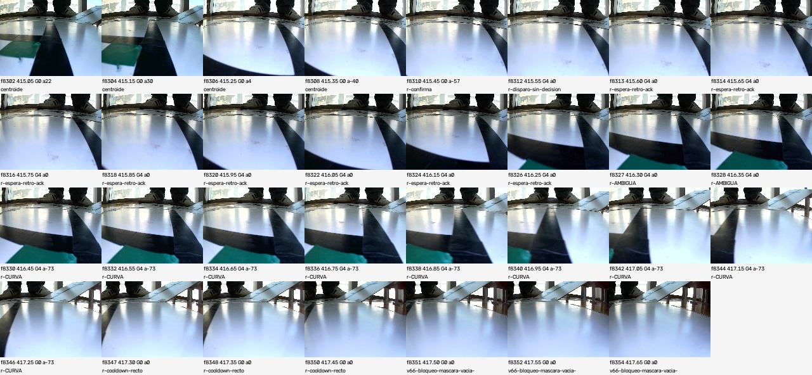